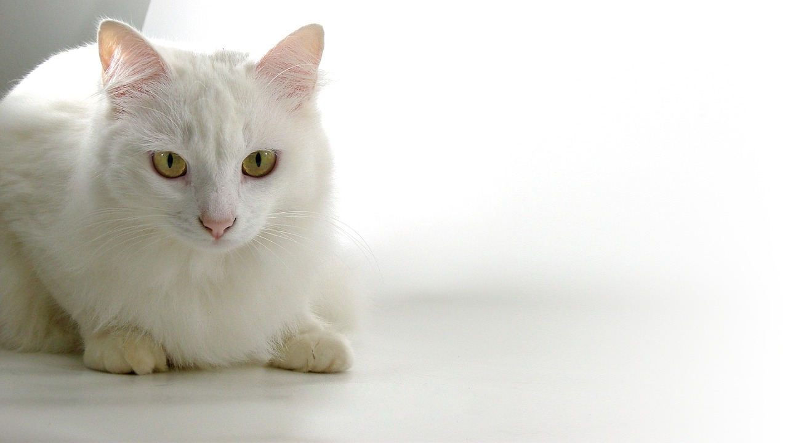

Why chose cats as pet for your family?
Cats are a highly sought after pet not only in the US but in other areas of the world as well. Cats are knwon for their calm behavior and loving personalities. Whether your goal is to have one, two, or five cats, they are amazing pets. Below are 4 of the most popular breeds of cats in the US.
Persian Cat
- Height: 10-15 inches tall.
- Life expectancy: 10-15 years
- Friendy cat, requires grooming, snuggly!


Ragdoll Cat
- Height: 9-11 inches tall.
- Life expectancy: 13-18 years
- Highyl Intelligent, fluffy, easily groomed!


Sphynx Cat
- Height: 8-10 inches tall.
- Life expectancy: 9-15 years
- Highly intelligent, nonshedding, hairless!


Exotic Shorthair Cat
- Height: 8-15 inches tall.
- Life expectancy: 13-15 years
- sociable, short coat, quiet, and a little bit active!